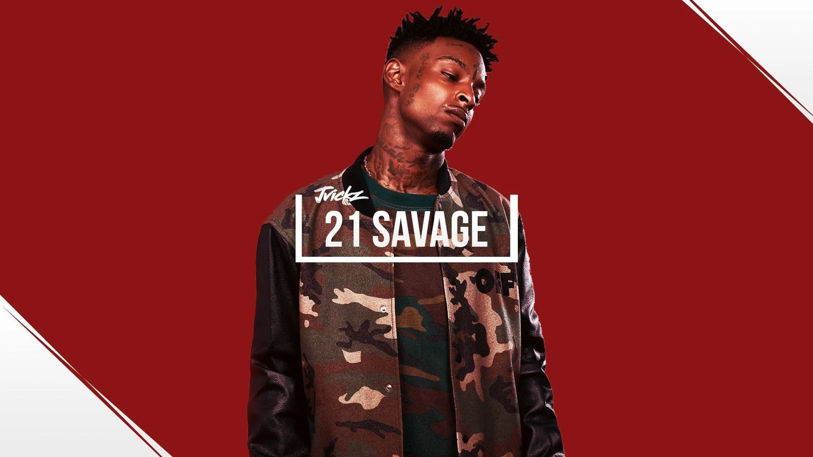

Future is always reliable to drop a hit on any given day. He chose the name “Future” because he
said his style best represents that. Im sure you know the name and one of my all time favorite songs is by
Future with “Low Life ft. The Weeknd”
#9
E40
I had to pay respects to a Bay Area legend. E-40 still makes hits to this day but we all know
all of the hits he gave us. His flow is off beat and unorthodox but he does it the right way. If you need to
liven up the party you can always count on E-40s classic hits for example “Function”.
#8
Lil Wayne
lil Wayne is arguably the greatest lyricist to ever do it. Working with some crazy beats like
the expiremental beat used in Lolipop where artists after artists turned it down. Wayne gave us the biggest hit.
In the words of the man himself... “Real G’s move in silence like lasagna”
#7
Kendrick Lamar
Kung Fu Kenny i mean do i need to say anything more? He gave us hits after hits and i gotta say
Swimming Pools and ADHD are both played regularly in my playlists. Plus he has a special place in my top 10
because he is my B-Day twin. A Legend in the rap game.
#6
The Weekend
The Weeknd is without a doubt one of my favorite artists. He was homeless until drake signed
him into OVO and he took off and never looked back. You know the name you know the music so i dont think i need
to explain why he deserves this spot on my list.
#5
T. Pain
T-Pain gave us every hit possible during our childhoods and you cant deny that! The man that
paved the way for current auto tune rappers. He produced his own beats and gave us hit after hit. He now streams
on Twitch and its pretty entertaining.

#4
21 Savage
21 Savage was a surprise pick for me, because when i first listened to him i didnt expect to
like his music that much. He has really good flow and can deliver bars like any other. Plus he works with
Producer “Metro Boomin” alot who is currently my favorite producer so considering that is why 21 is so high on
this list.
#3
Migos
I dont feel like i should explain why migos are my number 3 pick. All three of them work
together beautifully. Quavo with the melody, Offset with the crazy flow, and sadly R.I.P takeoff who had the
best wordplay to deliver the best bars. Fly high Takeoff.
#2
Ramirez
Ramirez is a member of G59 which is owned by my all time favorite artist. Ramirez is from the
bay area however his music has more of an underground sound to it. Amazing flow and delivery to land himself at
my number 2 spot.
#1
$uicideBoy$
Again this is only my opionion, but i believe $uicideboy$ have the hardest beats with the best
samples. They actually spread alot of really deep and heartfelt messages in their songs, however i do know they
have some questionable lyrics. Still, $uicideboy$ have run the underground scene since 2015 while producing
their own beats.